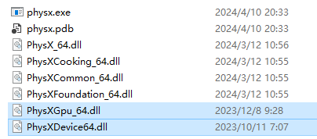

Simulation

Bake All: click the button, the physics result will be baked into keyframe. There are 3 process phases. ①.gathering kinematic rigidbody data. ②.physx calculating process, if you check the debug option, you can see the progress in the PhysX Visual Debugger. In this process you can press ESC to stop bake. ③. Setting bone keyframe, this is a long progress, you should wait it patiently.
Playback simulate: If enable, simulate during playback. For simple scene, playback may be smooth, but in a heavy scene, playback may be very laggy, youcan try to disable this, and play animation after bake animation into keyframe.
Set Keyframe Mode: Blender Setting Keyframe has a big performance issuse. So I provide two way to set keyframe. “Normal”: set keyframe by advanced API, using more time. “Fast”: set keyframe by basic api, faster, but it will cause existing keyframes to become linear. “Fast” is a better choice if you didn’t be setting any keyframes manually on the bones that will be simulated.
Bake range: Set simulation range for baking. If not set bake range will be scene frame range.
Selected Bone Only: If enable, only selected bones will be simulated and draw.
Inherit Linear Velocity: If enabled, linear velocity is calculated as the initial velocity based on the relative displacements of the two frames preceding the starting simulation frame.
Threads Number: The number of threads used in simulation is generally the number of physical cores of the CPU.
GPU: If enable, addon will try to use enable GPU acceleration. (Need to download and place two DLL file at the same directory of “physx.exe”)
Debug: If enable, addon will try to connect to the PhysX Visual Debugger and display the simulation detail on it. Notice, that the PVD need additional consumption, if not neccessary, disable it. PhysX Visual Debugger Download: https://developer.nvidia.com/physx-visual-debugger